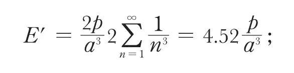
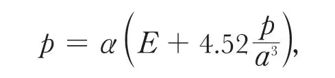
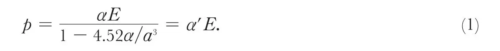
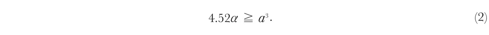
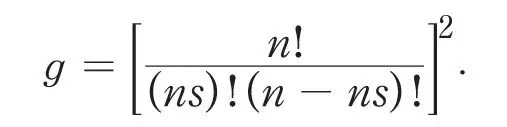
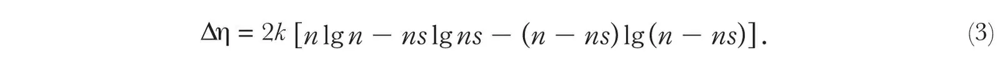
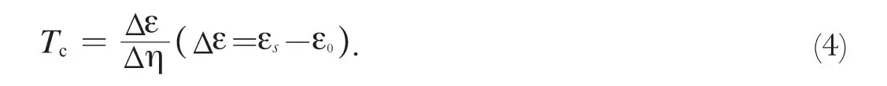
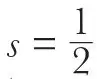
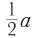
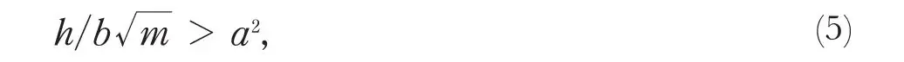

中文
中文J. Frenkel
Editor’s Note
Superconductivity involves a transformation to a state of zero electrical resistance, apparently equivalent to an infinite conductivity. But here Russian physicist Yakov Frenkel suggests instead considering that the dielectric constant—a measure of a material’s response to electric fields, due to polarisation—becomes infinite. While ordinary electrical current involves electrons moving freely through the material, a “polarisation current” might arise if the polarisation of atoms created by an applied electric field became infinite. Then, electrons could hop between atoms, creating coherent motion of one-dimensional chains of electrons sliding over the atomic lattice. Although Frenkel’s contribution did not explain superconductivity, it did further an ultimately fruitful idea: that the phenomenon is somehow linked to coherent motion of charge carriers. 中文
IT is customary to describe the supraconductive state of a metal by setting its specific electric conductivity σ equal to infinity. I wish to direct attention to another possibility, namely, that the supraconductive state can be described much more adequately by setting equal to infinity the dielectric constant ε of the substance, its conductivity σ remaining finite or even becoming equal to zero. 中文
The actual meaning of the new definition can be seen from a comparison of the mechanism of ordinary electric conduction (σ finite) and ordinary polarisation (ε finite). In the former case the electrons called “free” move independently, the conduction current being constituted by a drift motion due to the action of an external electric field and superposed on the unperturbed random motion of the individual electrons. In the second case the electrons called “bound” are displaced by the electric field simultaneously in the same direction, the polarisation current being due to an orderly collective motion of all the electrons. Under normal conditions the displacement of the electrons with regard to the respective atoms remains small compared with the interatomic distances; this corresponds to a finite value of the dielectric constant. The assumption that the latter becomes infinite means that under the action of an infinitesimal field the electrons are displaced simultaneously over finite distances, each of them passing successively from an atom to the next one, like a chain gliding over a toothed track. 中文
Such a collective motion of the “bound” electrons will constitute an electric current just as much as the individual motion of the free electrons, but a polarisation current rather than a conduction one. The electrostatic mutual action of the electrons moving collectively in a chain-like way will stabilise them against the perturbing action of the heat motion of the crystal lattice, which will result in the permanence of the polarisation current after the disappearance of the electric field by which it was started1. This permanence, which has been erroneously interpreted as corresponding to an infinite value of the specific conductivity, must be interpreted in reality as corresponding to an infinite value of the dielectric constant. Now, how is it possible to explain the occurrence of such an infinite value? This turns out to be a very simple matter, the appropriate mechanism having been considered already by Hertzfeld, who, however, failed to give it the correct interpretation. Consider a chain of equally spaced atoms with a polarisation coefficient α. This means that an isolated atom assumes under the action of an external field E an electric moment p= αE. If the field E is acting in the direction of the chain, then in computing the polarisation of a certain atom we must add to it the field E´ produced by all the other atoms in virtue of their induced electric moments. All these moments being the same, we get

and consequently

whence

We thus see that with a finite value of α for an isolated atom, an infinite value of the effective polarisation coefficient α' for the atom-chain is obtained if

The sign > corresponding to a negative value of α' need not be distinguished from the sign =; in both cases the atom chain is characterised by the instability of the electron chain connected with it. This instability, which has been noticed previously by Hertzfeld, was interpreted by him as an indication of the fact that the electrons no longer remain bound, but become free “conduction” electrons. Thus the inequality (2) was considered as characteristic of the metallic state in general. I believe that it is characteristic not of the metallic state but of the supraconductive state, a supraconductor being rather a dielectric with freely movable electron chains (that is, with ε = ∞) than a metal. 中文
According to a theory of the metallic state developed in a rather qualitative way by Slater2 and recently greatly improved and generalised by Schubin3, the normal conductivity of a metal is due to a partial ionisation of the atoms, a certain fraction s of all the atoms becoming positive ions, and an equal portion (to which the corresponding electrons are attached) negative ions. If these electrons are bound very weakly, they may be considered as “free” in the usual sense of the word. The conductivity of a metal is equal to the sum of the conductivities due to these free electrons or negative ions on one hand and the positive ions or “holes” on the other. The mechanism of electrical conduction consists in the individual jumping of an electron from a negative ion to one of the neutral atoms surrounding it (which is thus converted into a negative ion), or from a neutral atom to a positive ion, which thus becomes a neutral atom, its rôle being switched over to the “donor”. We meet with the same type of electric conduction in electronic semi-conductors4. The chief distinction between a metal and a semi-conductor consists in the fact that in the former case s > 0 at the absolute zero of temperature (T) whereas in the latter case s = 0 at T = 0, increasing according to the Boltzmann equation (s = ce–W/kT where W is the ionisation energy) with the temperature. 中文
The elements which are likely to become supraconductors form an intermediary group in the sense that at ordinary temperatures they are relatively poor conductors, like the ordinary semi-conductors; the dependence of their conductivity on the temperature is, however, of the same character as that of typical metals (negative temperature coefficient). This means that in the case of these intermediary elements or “half-metals”, we have to do with substances which are characterised by a practically constant value of the ionisation fraction s. Their small conductivity can be explained either by a small value of s or by a small mobility of the individual electrons (which seems the more probable alternative in view of the correlation between supraconductivity and the Hall effect discovered by Kikoin and Lasareff). The fact that, in ordinary circumstances, that is, above the “transition temperature” Tc, these substances are not supraconductive, can be explained by the finite value of their dielectric constant as determined by the polarisability of ions stripped of the conduction electrons. The nature of the transition which takes place when the temperature T is decreased below Tc can thus be very simply interpreted by assuming that, at this temperature, s suddenly falls from a certain rather high value to zero, and that the polarisation coefficient α of the resulting normal atoms with their full complement of bound electrons satisfies the inequality (2)*. The very fact that the substance loses its conductivity (σ falling to zero along with s) thus transforms it from a metal into a dielectric with ε = ∞, that is, it becomes a supraconductor. 中文
Both the necessity and the sharpness of the transition s → 0 (that is, σ → 0 and ε → ∞) can be easily understood if we assume that the state s = 0 has a smaller energy than the state s > 0. It results from Slater’s and especially from Schubin’s calculations that the lowest energy level for polar (ionic) states may correspond to a finite value of s, whether this lowest level lies below or above the energy level corresponding to s = 0. It can further easily be seen that the distance between the successive levels in a band of levels corresponding to a given value of s is very small compared with kT, even for extremely low temperatures (of the order of a few degrees K.). If, further, the total width of the band was also small compared with kT, the entropy of the state s > 0 could be calculated as k lgg, where g is the statistical weight of the whole band, that is, the number of ways in which the state s is realised. Taking all possible distributions of the ns electrons (negative ions) and ns positive holes (positive ions) between the n atoms, we get

The transition 0→s is thus connected with an increase of entropy

In reality, the width of a band is of the order of 1 volt and therefore at least a thousand times larger than kT at the transition point. This will result in a much smaller entropy increase ∆η. 中文
So long, however, as ∆η>0 it follows that the state s=0 must be stable at low temperatures and the state s > 0 at higher ones. 中文
The transition temperature Tc as determined by the equality of the free energies of the two states is given by

Taking

(which is probably an exaggeration) and calculating ∆η with the help of (3), we get ∆η = 1.7kn. If T = 4° (say) the transition energy ∆ε should be of the order of 14 small calories per gram atom. This value is greatly reduced if the width of the energy band under consideration is large compared with nT, its effective weight being accordingly small compared with g. 中文
We thus see that the second condition for supraconductivity is expressed by the inequality εs > ε0 at T = 0. But this is not all. Equation (1) is a good approximation so long as the chain-like displacement of the electrons x is small compared with the interatomic distance α. When x approaches

, the electrons are pushed back by a force which varies more rapidly than the first power of x and can be overcome through the quantum mechanism of the tunnel effect. If a large number of electrons N are moving together in a chain-like way, they behave like a particle with an N-fold mass, the transition probability being correspondingly reduced. Now in his second theory of supraconductivity, Kronig5 has shown that a chain or, as he puts it, a “linear lattice”, of electrons, bound to each other in a quasi-elastic way, can be displaced through a periodic field of force (with a period α equal to the average spacing between the electrons) under the condition
where h is Planck’s constant, m the mass of an electron and b is the rigidity coefficient of the “electron lattice”. Putting b = τe/α3/2 where τ is a numerical coefficient of the order 1, Kronig finds that the condition (5) is fulfilled if α is of the order of less than a few Ångström units. This seems to show that a “linear lattice”, that is, chain of electrons, is practically always movable with respect to the corresponding chain of atoms, provided the condition (2), which is much more restrictive, is fulfilled also. In fact, the latter condition seems to be the mathematical formulation of the possibility of treating the (bound) electrons as a kind of lattice. I do not believe in the reality of the three-dimensional lattices postulated by Kronig in his first paper. He has himself shown that such lattices, even if they exist, could not be moved through the ionic lattice. As a matter of fact, one-dimensional lattices or rather movable chains of bound electrons fully suffice for the explanation of supraconductivity. Such chains need not be movable in all directions. It is sufficient to assume that they should be movable in one particular crystallographic direction corresponding to the smallest spacing between the atoms, the dielectric constant being infinite for this direction and preserving a finite value for all the others. 中文
In spite of its shortcomings, Kronig’s theory is certainly the nearest approach to the correct explanation of supraconductivity published hitherto, the present theory differing from it more in form than in essence. The theory I advanced before, which was based on the supposed stabilisation of the free electrons (against heat motion) by their electro-magnetic action, was wholly erroneous in this particular respect. It was correct, however, in describing the motion of the electrons in the supraconductive state as an organised “collective” motion. This led to the result that a metal must possess when in this state an enormous diamagnetic susceptibility. This corollary subsists in the new theory and is corroborated by the fact recently discovered by Meissner that the magnetic permeability μ of a metal in the supraconducting state drops to zero. A supraconductor can thus be described as a body with μ = 0 and ε = ∞, its electrical conductivity σ in the exact sense of the word being either finite or even zero. 中文
A more complete account of the present theory will be published elsewhere. 中文
(133, 730-731; 1934)
References:
1. The effects of heat motion of the crystal lattice on the individual electrons are mutually cancelled. Cf. R. Kronig, Z. Phys., 80, 203; 1933.
2. Phys. Rev., 35, 509; 1930.
3. In the press.
4. Cf. J. Frenkel, Nature, 132, 312, Aug. 26, 1933.
5. Z. Phys., 80, 203; 933.
* This inequality is probably satisfied for all metals, although not all of them are supraconductors, because for true metal s remains finite (and practically constant) down to the absolute zero of temperature, while for supraconductors it jumps to a finite value slightly above it .